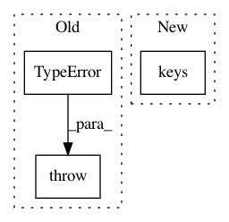

cf38c49c6260e2a7af3c1f752088532f0d76ab6d,torch_geometric/nn/conv/message_passing.py,MessagePassing,__init__,#MessagePassing#Any#Any#Any#,53
Before Change
if set(aggregate_special_args) - set(
self.__aggregate_signature__.parameters
):
raise TypeError(
"Incomplete signature of aggregate: {} are "
"missing required arguments".format(
set(aggregate_special_args)
- set(self.__aggregate_signature__.parameters)
)
)
def propagate(self, edge_index, size=None, **kwargs):
rThe initial call to start propagating messages.
After Change
self.__update_sign__ = MappingProxyType(self.__update_sign__)
msg_args = set(self.__msg_sign__.keys()) - msg_special_args
aggr_args = set(self.__aggr_sign__.keys()) - aggr_special_args
update_args = set(self.__update_sign__.keys()) - update_special_args
self.__args__ = set().union(msg_args, aggr_args, update_args)
In pattern: SUPERPATTERN
Frequency: 3
Non-data size: 3
Instances
Project Name: rusty1s/pytorch_geometric
Commit Name: cf38c49c6260e2a7af3c1f752088532f0d76ab6d
Time: 2020-01-05
Author: matthias.fey@tu-dortmund.de
File Name: torch_geometric/nn/conv/message_passing.py
Class Name: MessagePassing
Method Name: __init__
Project Name: keras-team/keras
Commit Name: 5dd8c5c10ccc286a67ba4846a81701207b606e0d
Time: 2016-10-12
Author: francois.chollet@gmail.com
File Name: keras/layers/convolutional.py
Class Name: ZeroPadding2D
Method Name: __init__
Project Name: rwth-i6/returnn-experiments
Commit Name: 3875265658d6052b153d44e44169b499566b19fb
Time: 2021-03-27
Author: albzey@gmail.com
File Name: common/models/transducer/transducer_fullsum.py
Class Name:
Method Name: make_net